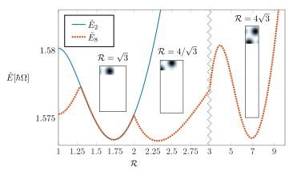

Simulating Infinite Vortex Lattices
Superfluidity is an exotic state of matter occurring in physical systems ranging from liquid helium to neutron stars to ultracold atomic gases. One curious feature of superfluidity is found in the way angular momentum is acquired: instead of spinning as rigid bodies do, superfluids acquire angular momentum by nucleating vortices which themselves carry angular momentum. All this is the product of the collective quantum mechanical behaviour of the atoms, how they move around and interact with each other, and it is very difficult to describe these large interacting systems exactly. For this reason a few approximations are in order to make progress. Probably one of the most important ones needed is the so-called mean-field approximation where the whole many-body system is approximated by an averaged one-body system. What one finds is an equation, known as the Gross-Pitaevskii equation, which describes the evolution of the superfluid.
Things are still not quite simple enough to solve this problem just using pen and paper. Instead, we use a computer to solve the problem numerically. One approach is to directly tackle the full confined system with many vortices numerically. But this approach, though often used, has its drawbacks. In particular, it can be very computationally intensive. We instead consider another limit which simplifies our calculations and from where we can understand what is going on.
Let's look at the problem a bit closer. First of all, what are we looking for? Often one is interested in the ground state of a system, namely the state with lowest energy. This is where things are often calm and tidy and one can observe some pattern or order. In our problem, we look for the ground state in a "non-inertial" reference frame which rotates with the superfluid. In this frame our problem translates to the question: what is the most stable arrangement of the quantum vortices?
Energy of a unit cell containing 2 (blue) and 8 (red) vortices as a function of the aspect ratio of the unit cell.
Secondly, is there a regime in which we can extract more fundamental information and which at the same time simplifies things more? The limit we consider is the ideal case where one has an infinite number of vortices. It might sound like we are complicating things but actually if this infinite number of vortices is arranged in a periodic way, we can study only a single period of the system — also known as the unit cell — with only a few vortices. We are glossing over a few subtle aspects of this problem. For instance the wavefunction, which is what we are trying to compute, does not quite have the periodicity of the votex lattice. But this is the main idea. A variety of such unit cells is shown in the figure below.